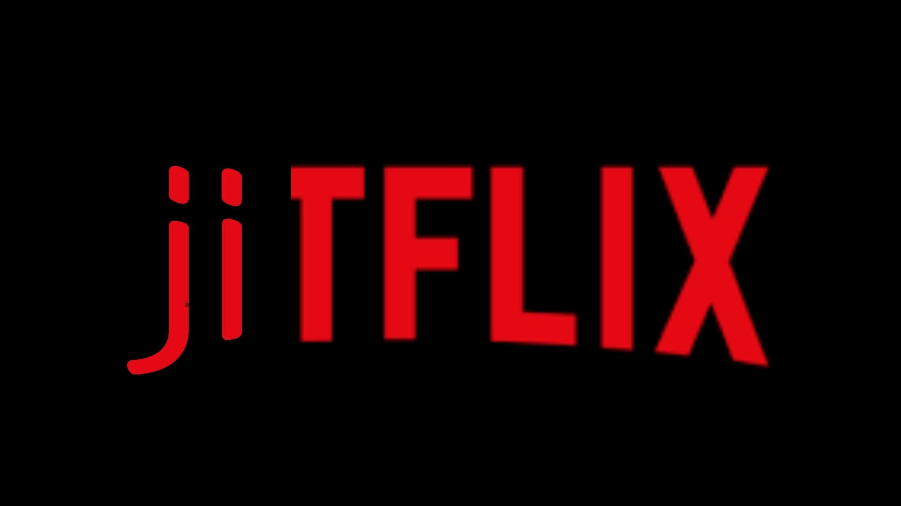

--- 최지웅의 추천작 ---
 천문 : 하늘에 묻는다 포스터
천문 : 하늘에 묻는다 포스터
제목 : 천문 : 하늘에 묻는다
장르 : 사극, 드라마
감독 : 허진호
출연 : 최민식, 한석규 외
개봉일 : 2019년 12월 26일
평점 : 8.79 / 10
제작사 : 하이브미디어코프
배급사 : 롯데엔터테이먼트
추천 이유 :
이 영화는 세종과 장영실의 이야기를 다루고 있으며 주연 배우로는 장영실 역에 최민식과 세종대왕 역에 한석규,
황희 정승 역에 신구가 있으며 주연배우들의 연기 솜씨가 매우 뛰어나 지루하게 느껴지지 않는다
--- 서은성의 추천작 ---
 탑건 : 매버릭 포스터
탑건 : 매버릭 포스터
제목 : 탑건 : 매버릭
장르 : 밀리터리, 항공, 액션, 드라마, 로맨스
감독 : 조셉 코신스키
출연 : 톰 크루즈, 마일스 텔러 외
개봉일 : 2022년 5월 18일
평점 : 9.59 / 10
제작사 : 스카이댄스 미디어, 돈 심슨 / 제리 브룩하이머 필름, TC 프로덕션
배급사 : 파라마운트 픽처스, 롯데엔터테이먼트
추천 이유 :
이 영화는 톰 크루즈 주연의 영화로 탑건 매버릭은 1986년 원작에 대한 훌륭한 속편이자, 톰 크루즈의 연기, 스펙타클한 액션, 그리고 아버지 세대와 아들 세대의 이야기까지 잘 담아낸 영화
--- 조우신의 추천작 ---
 분노의 질주 : 더 세븐 포스터
분노의 질주 : 더 세븐 포스터
제목 : 분노의 질주 : 더 세븐
장르 : 범죄, 액션, 스릴러
감독 : 제임스 완
출연 : 빈 디젤, 폴 워커, 드웨인 존슨 등등
개봉일 : 2015년 04월 01일
평점 : 9.21 / 10
제작사 : 오리지날 필름, MRC, 원레이스 필름, 차이나 필름
배급사 : 유니버설 필처스, UPI 코리아
추천 이유 :
이 영화는 인기 시리즈인 분노의 질주 시리즈의 영화로 주연 배우로는 드웨인 존슨과 빈 디젤, 폴 워커가 있다 시리즈 최대 제작비와 압도적인 스케일의 액션, 그리고 스턴트 액션으로 눈이 즐거운 영화이므로 추천함
이지성
--- 이지성의 추천작 ---
 어벤져스 : 인피니티 워 포스터
어벤져스 : 인피니티 워 포스터
제목 : 어벤져스 : 인피니티 워
장르 : 슈퍼히어로, SF, 액션, 어드벤쳐 등등
감독 : 앤서니 루소, 조 루소
출연 : 로버트 다우니 주니어, 크리스 햄스워스, 마크 러팔로 등등
개봉일 : 2018년 04월 25일
평점 : 9.09 / 10
제작사 : 마블 스튜디오
배급사 : 월트 디즈니 스튜디오스 모션 픽처스, 월트 디즈니 컴퍼니 코리아
추천 이유 :
추천 이유로는
마지막 부분에 반전과 눈을 즐겁게 해주는 화려한 CG 배우들의 액션 연기 등이 매우 좋아 이 영화를 추천한다
--- 류요한의 추천작 ---
 엣지 오브 투모로우 포스터
엣지 오브 투모로우 포스터
제목 : 엣지 오브 투모로우 (2014)
장르 : 밀리터리 SF, 액션, 루프물 등등
감독 : 더그 라이먼
출연 : 톰 크루즈, 에밀리 블런트 등등
개봉일 : 2014년 6월 4일
평점 : 8.74 / 10
제작사 : 빌리지 로드쇼 픽처스, 랫팩-듄 엔터테인먼트
배급사 : 워너 브라더스, 워너 브라더스 코리아
추천 이유 :
액션과 SF 요소가 잘 조화되어 흥미진진한 스토리를 제공하며, 톰 크루즈의 연기와 타임 루프라는 독특한 설정이 영화의 매력을 더합니다.
주요 매력으로는 타임 루프 설정, 액션과 SF의 조화, 흥미진진한 스토리, 톰 크루즈의 연기, 독특한 소재 등으로 인해서 추천합니다.